會議結束了，事情才開始
第一堂 · 高效會議主持 SOP｜把會議從流程還原成一筆要交付結果的交易
我們談效率，談的幾乎都是機器與軟件——生產線、倉儲、演算法、數據中台，卻很少有人把「開會」放進成本表裡算一算。但在一個協會、一間公司或一個機構裡，會議其實是最貴的一間房間：它把所有最能做事的人，集中在同一個空間裡，讓他們…
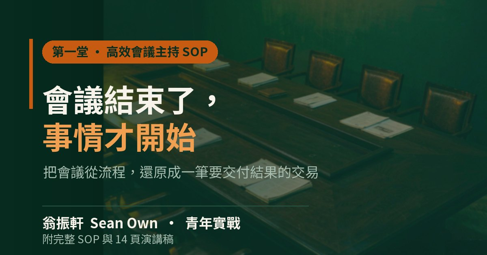
KEY POINTS
本堂重點（三句話）
- 主持人不是最會講的人，是讓會議產生結果的人。
- 開場快、內容穩、轉場快、高潮慢、結尾快而有力。
- 散會前一定要把「誰、做什麼、何時完成」白紙黑字定下來。
以下三句話是整堂課的骨架；正文把它們拆開講，附錄則是可以直接印出來貼在會議室牆上的操作手冊。
我們談效率，談的幾乎都是機器與軟件——生產線、倉儲、演算法、數據中台，卻很少有人把「開會」放進成本表裡算一算。
但在一個協會、一間公司或一個機構裡，會議其實是最貴的一間房間：它把所有最能做事的人，集中在同一個空間裡，讓他們把一天裡最清醒的幾個小時，用在互相聽完對方的說明上。
這其實不是新問題，《禮記》的鄉飲酒禮一年只辦一次，鄉人齊聚，飲酒、序齒、觀德，程序冗長得像今天任何一場年會，但它從來不為的是聽誰講得好，而是把鄉裡的秩序重新說一遍；一八七一年成立的鏡湖醫院慈善會、一九二一年成立的同善堂，兩個澳門最老的結社，最核心的傳統也不是行善的方法論，而是每逢要決定大事，誰坐哪個位子、哪一件事由誰承擔、什麼時候要有回音——這些必須在會上說清楚，然後寫下來。
只是到了今天，我們把會議塞得越來越滿，議程一頁比一頁長，投影一頁比一頁密，散會時每個人都覺得自己聽了很多，卻很少有人能說出這場會到底產生了什麼。
問題不在於大家不盡心，而在於我們把「開會」當成了一種流程，而不是一筆需要交付結果的交易；那麼這筆交易究竟由誰來主持，以及主持人的角色應該是什麼，這就是最近幾堂課我們反覆回到的問題。
一、我們把會開成了什麼
先看一個最普通的場景，這也是絕大多數會議真正的樣子：會議開始前二十分鐘，主辦方在寒暄、發材料、調麥克風；前三十分鐘由級別最高的人講背景，而這部分內容在場所有人早已知道；接著一個小時圍繞一個誰也拍不了板的問題反覆橫跳；最後十分鐘主持人念一遍決議，念完沒有人問「誰做、何時完成」。
四個小時裡真正用於決策的時間不超過十五分鐘，而這十五分鐘往往發生在所有人都已經疲憊、不太願意再反對的時候。
這就是會議效率的真實問題——它不是效率不夠，而是產出物不對：我們花大量時間交換信息，而那些信息用半小時就能說完；我們把真正的決定拖到最後十分鐘，而在那個時候通過的，往往只是最容易被通過的那個版本。
於是每一場會議的代價就不只是幾小時的工時，而是一次集體注意力的消耗——最清醒的時段用來鋪場，最有判斷力的人往往在前半場就講完了觀點，然後開始看手機，而真正需要為結果負責的人，是在信息最少、情緒最疲的時候被問了一句「大家還有沒有意見」。
我們不是不會開會，我們是把開會做成了儀式。
二、主持人不是最會講的人
那麼主持人應該是誰？很多人的第一反應是那個最會講的人、最熱絡的人、最能鎮住場的人，而這恰恰是最常見的誤會，最近幾堂課把主持人的角色收斂成三個「不是」，而這三條全部都在否定同一種本能：把主持理解成表演。
第一，不是最會講的人。主持人的本事不在於表達，而在了讓所有人在同一個時間裡有效討論；一場會裡如果最多的時間是主講人自己在說，那這場會的問題不在設備，在人選。
第二，不是發言最多的人。主持人說得越多，通常意味著其他人說得太少，而會議的資訊恰恰藏在那些沒有被問到的人身上；一個合格的主持人要做的，是把話從自己嘴裡轉到別人嘴裡。
第三，不是討好所有人的人。會議不是征求一致意見的場合，試圖讓每一個人都滿意地離開，往往意味著所有人都可以不承擔結果。
這三個「不是」其實指向同一件事：主持人的價值不在於現場的表現力，而在於一場會結束之後，留不下來的那幾行白紙黑字。
都沒意見才是最大的問題——要嘛不支持，要嘛懶得說。
三、節奏：開場快、內容穩、轉場快、高潮慢、結尾快而有力
如果說角色定位解決了「由誰來主持」，那麼節奏解決的是「怎麼主持才不失控」，而這套節奏的口訣只有二十五個字：開場快、內容穩、轉場快、高潮慢、結尾快而有力。
開場之所以要快，是因為決定一場會生死的是頭十五分鐘，如果我們把寶貴的時間用來寒暄、調設備、講背景，聽眾的注意力就已經流失了一半，所以開場只需要三句話：今天要討論什麼、聚焦哪三個重點；今天希望產出什麼結論；時間如何分配。
內容之所以要穩，是因為報告與數據環節一旦出錯，全場都會停下來重新對齊，此時主持人不該急著推進，而該把節奏交給內容本身；至於轉場快，則是因為議題與議題之間的縫隙最容易失控，一句「這個議題我們待會另約時間談，先把目前這個收斂」就能把跑掉的話題拉回來。
高潮慢，是整套節奏裡最反直覺的一段；真正需要決策的議題，往往是全場意見最分歧的時刻，這時候越是催著舉手，越是會讓人選擇沉默，主持人要做的恰恰是把時間讓給分歧，讓不同的聲音把話說完；至於結尾快而有力，說的是最後十分鐘不能水，主持人必須在散會前把「誰、做什麼、何時完成」當場念出來、當場確認，讓每個人帶走一份屬於自己的任務，而不是帶走一份屬於會議的記憶。
這裡還有一個容易被忽略的細節：所謂的「快」，對工程師是精簡，對業務團隊是熱絡，對長輩是從容，同一個字在不同的人面前有完全不同的落地方式，主持人如果只照著自己的習慣節奏走，再準確的流程也會水土不服。
四、討論和表決是兩個階段，不要混在一起
如果說節奏是主持人的手藝，那麼「討論和表決分開」就是會議能否真正產出結果的分水嶺。
我們最常犯的錯，是把討論和表決揉成同一個環節——討論到第三輪，主持人開始暗示自己希望通過的方向，接著問「大家還有沒有意見」，然後在沉默中宣布通過；這樣的會議效率極高、節奏極順，但通過的往往不是一個經過充分比較的方案，而是一個在場所有人都沒有足夠力氣反對的方案。
正確的做法是把決策流程拆成八步依序走完：宣布開會、確認出席人數與法定門檻、確認議程、報告事項、討論事項、提案與臨時動議、表決與決議、確認決議事項；其中最容易被跳過的是「確認決議事項」這一步，也是最不能省的一步，因為只有把決議重新念一遍、並且在場確認，討論才算真正結束。
而所有的提案都必須具體到四個要素：做什麼、誰負責、何時完成、需要什麼資源；一個只有方向沒有這四個要素的提案，不是提案，是一句話，而在會議上，一句話永遠不會變成行動。
五、會議結束了，事情才開始
寫到這裡可以回到最開始的那個問題：會議是不是最貴的一間房間。
如果答案是肯定的，那麼會議的成本絕不只是幾小時的時間，而是一次集體注意力的消耗，是所有人最清醒的那一段人生被拿來互相聽完對方的說明；因此衡量一場會議的標準，絕不該是講得順不順、氣氛和不和諧、有沒有人提前離開，而應該是散會二十分鐘之後，有沒有人仍然知道自己該去做什麼。
寫下來，確認每個人都知道自己要做什麼，然後讓那張紙承擔後續所有的記憶功能。
附錄：第一堂 · 高效會議主持 SOP
| 項目 | 內容 |
|---|---|
| 主題 | 第一堂：高效會議主持與活動管理 |
| 來源 | 4 場轉寫稿彙整（高效會議管理與主持技巧／高效會議主持技巧與實戰演練／高效會議主持與活動管理／活動主持與高效會議管理） |
| 適用場景 | 內部理監事會、會員大會、專題論壇、座談會、跨單位協調會 |
一、會前籌備 SOP
| 序 | 開會前必寫三件事 | 說明 |
|---|---|---|
| 一 | 目的 | 這場會到底要得到什麼？ |
| 二 | 議題類型 | 報告型／討論型／決策型／行動型？ |
| 三 | 行動確認 | 誰？做什麼？何時完成？ |
每個議題都要標：
| 標註項 | 說明 |
|---|---|
| 預計時間 | 該議題的時長上限 |
| 主持人 | 該議題由誰掌控 |
| 需要什麼資料 | 會前必須發放的材料 |
| 希望產出什麼 | 該議題結束時應得到的東西 |
場地與人員：
| 項目 | 做法 |
|---|---|
| 與會人 | 不相干的人不要請來湊人數 |
| 分組規模 | 每組 10–12 人為佳，太多會失語 |
| 組長 | 一定要指定，組長唯一任務是控制時間 |
二、主持人的三個角色定位
| 定位 | 說明 |
|---|---|
| 不是最會講的人 | 是讓大家有效討論的人 |
| 不是發言最多的人 | 是引導別人發言的人 |
| 不是討好所有人的人 | 是讓會議產生結果的人 |
三、開場三句話
| 順序 | 內容 |
|---|---|
| 一 | 今天我們要討論什麼、聚焦哪三個重點 |
| 二 | 今天希望產出什麼結論 |
| 三 | 時間如何分配 |
四、主持節奏公式
開場快 → 內容穩 → 轉場快 → 高潮慢 → 結尾快而有力
| 對象 | 「快」的含義 |
|---|---|
| 工程師 | 精簡 |
| 業務團隊 | 熱絡 |
| 長輩 | 從容 |
五、五個不要
| 序 | 內容 |
|---|---|
| 一 | 不要自己講太多 |
| 二 | 不要讓議題失控 |
| 三 | 不要害怕不同意見（沒意見才是最大的問題） |
| 四 | 不要為了氣氛犧牲決策 |
| 五 | 不要散會後忘記決議 |
六、五個一定要
| 序 | 內容 |
|---|---|
| 一 | 一定要先講目的 |
| 二 | 一定要控制時間 |
| 三 | 一定要讓不同聲音出現 |
| 四 | 一定要把討論轉成決策 |
| 五 | 一定要確認誰負責、何時完成 |
七、現場狀況處理表
| 狀況 | 做法 |
|---|---|
| 貴賓遲到 | 估算還要多久；先讓在場人自由交流安撫等待；不可先開場 |
| 講者超時 | 用大白板寫「剩 X 分鐘」舉到他視線；或中段休息時溫馨提醒 |
| 麥克風／設備壞 | 不慌、不罵承辦人；用身體帶距離繼續講；事後檢討 |
| 少數人鬼打牆 | 「您這個意見很好，我們先記錄下來」→ 轉下一位 → 「時間關係這個議題先保留」 |
| 有人離題 | 三步走：肯定他 →「這議題我們待會另約時間談」→「先把目前這個收斂」 |
| 全場不發言 | 各個擊破，軟性點名：「您怎麼看？」不要質問「你怎麼不講」 |
| 意見對立 | 「我們先把各自立場放下，看問題本質是什麼」「不是證明誰對誰錯，是找對組織最好的方案」 |
八、正式會議決策流程
| 步驟 | 內容 |
|---|---|
| 一 | 宣布開會 |
| 二 | 確認出席人數與法定門檻 |
| 三 | 確認議程 |
| 四 | 報告事項 |
| 五 | 討論事項 |
| 六 | 提案與臨時動議（做什麼、誰負責、何時完成、需要什麼資源） |
| 七 | 表決與決議 |
| 八 | 確認決議事項 |
討論和表決是兩個階段，不要混在一起；討論完了再投票。
九、附錄工具
30 秒自我介紹公式（酒會／交流場合）
| 順序 | 內容 |
|---|---|
| 一 | 我是誰（姓名＋來自哪／哪個會） |
| 二 | 我今天的收穫是什麼（一句話） |
| 三 | 給大家的祝福（一句話） |
致詞萬用骨架（主持人／主人用）
| 順序 | 內容 |
|---|---|
| 一 | 問候台上貴賓：「尊敬的長官、各位會友、女士先生們大家好。」 |
| 二 | 感謝：「感謝大家今天撥冗前來。」 |
| 三 | 緣起：「今天我們齊聚在這裡，是為了……」 |
| 四 | 願景：「期待今天的交流，能為我們的合作打下基礎。」 |
| 五 | 舉杯：「最後，讓我們共同舉杯，祝……圓滿成功！」 |
前 24 小時檢核
| 序 | 檢核項目 |
|---|---|
| 1 | 貴賓名單、職稱、站位確認 |
| 2 | 司儀稿、流程表、時間軸 |
| 3 | 麥克風、投影、攝影測過 |
| 4 | 禮賓人員分工表 |
| 5 | 應變預案（貴賓缺席、設備故障、超時） |
| 6 | 座位、桌次圖 |
十、本堂金句
主持人不是最會講的人，是讓會議產生結果的人。
都沒意見才是最大的問題——要嘛不支持，要嘛懶得說。
討論和表決是兩個階段，不要混在一起。
會議結束了，事情才開始——白紙黑字誰負責，比什麼都重要。
心裡再慌，聲音要穩——不要讓觀眾看到你慌。
演講稿：高效會議主持 SOP
把整堂課拆成十四頁：三章正文＋一本可列印的現場操作手冊，下方任選一頁可全屏放映。
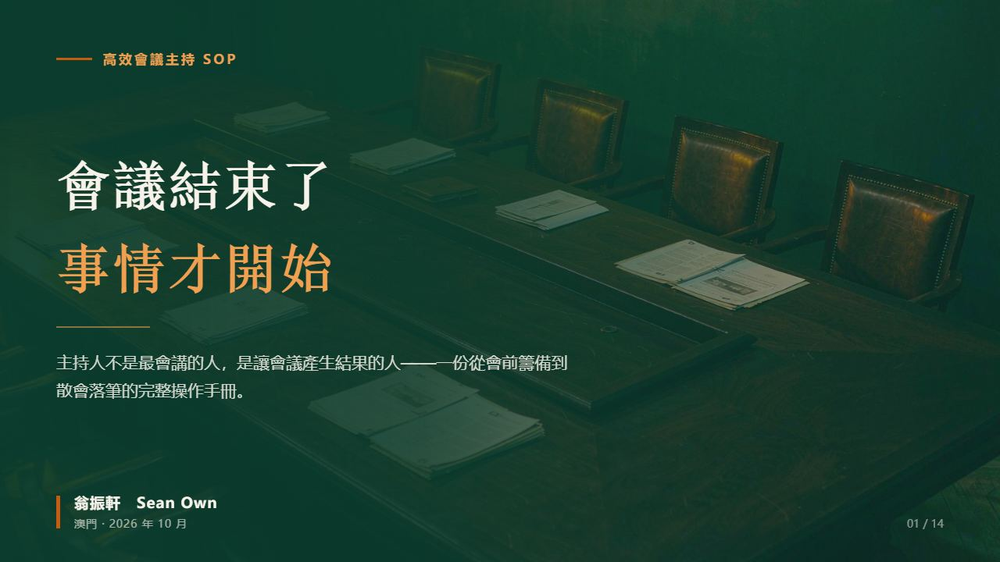
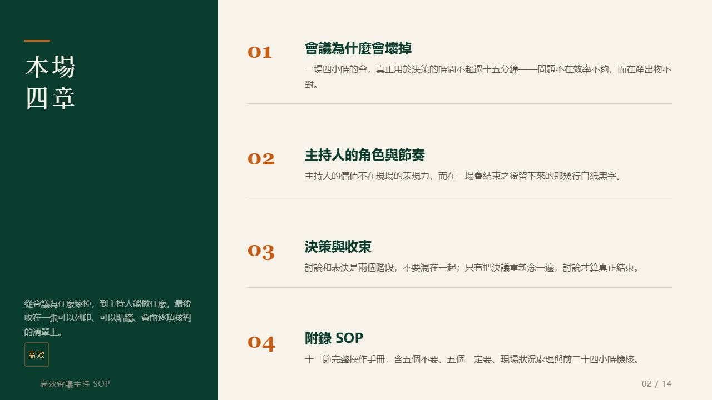
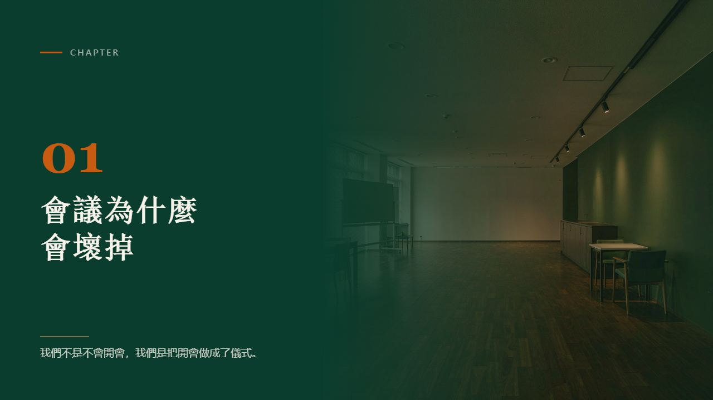
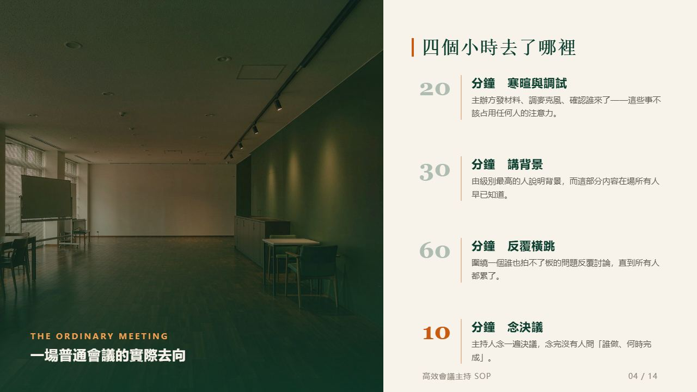
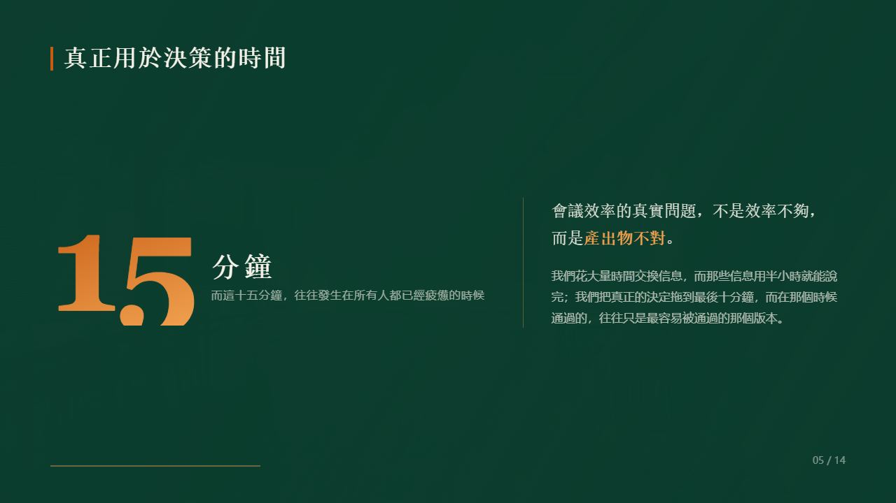
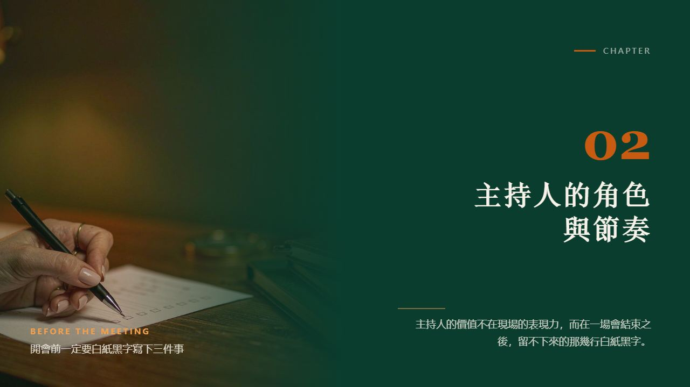
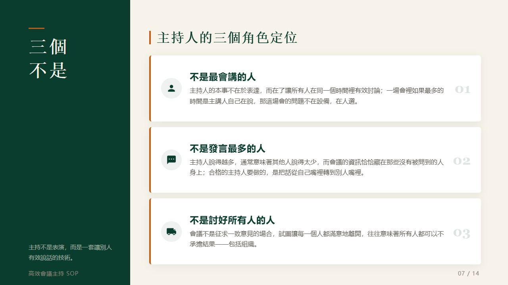
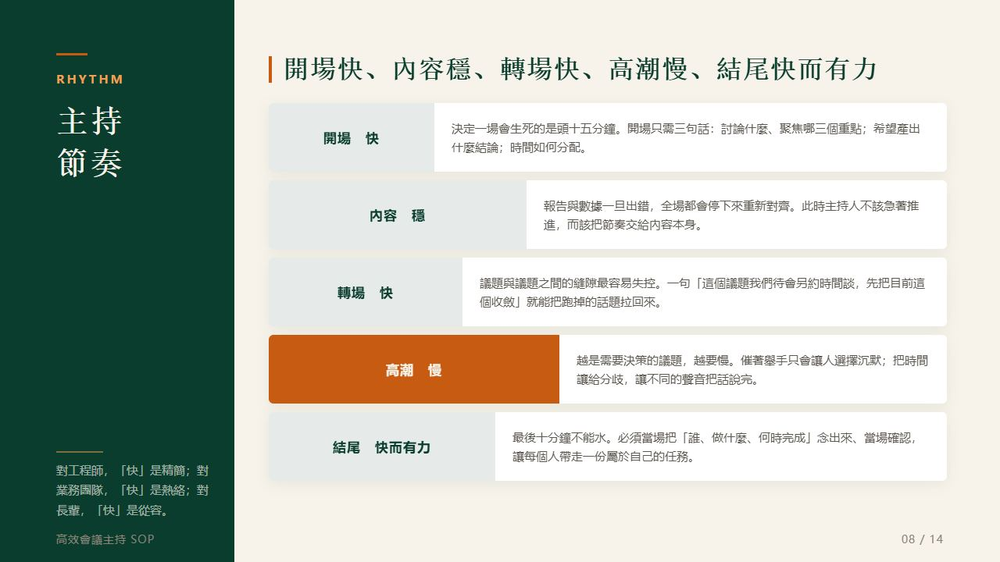
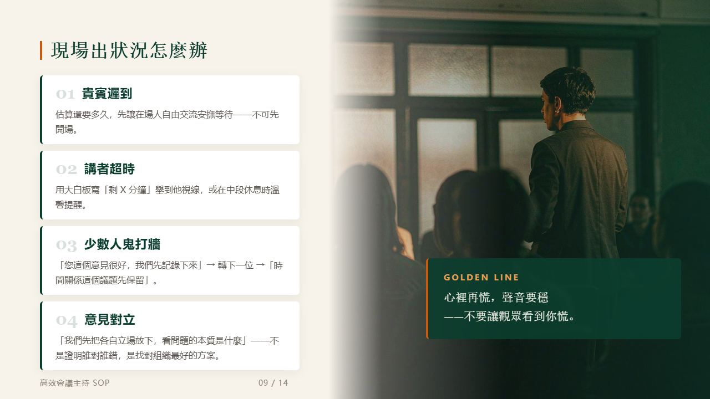
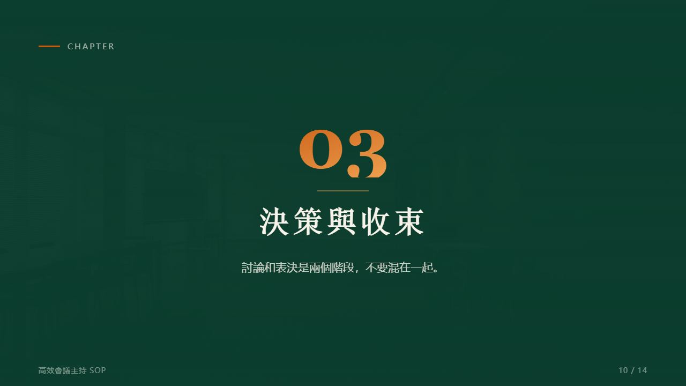
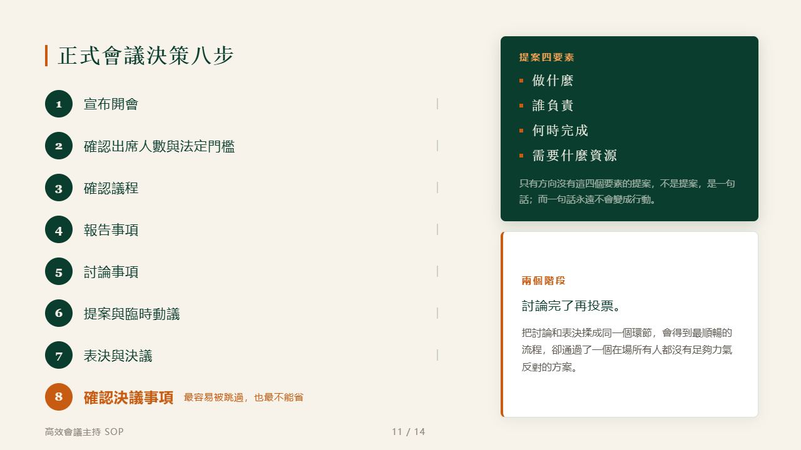
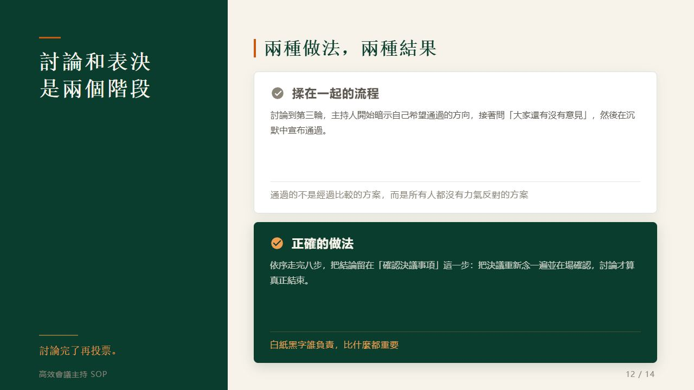
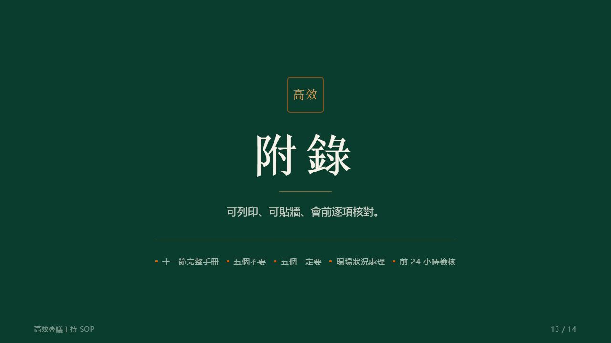
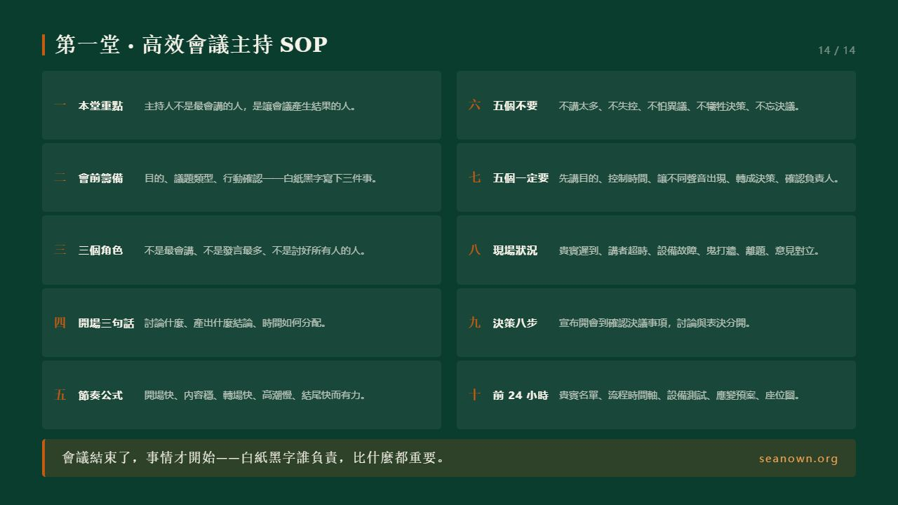